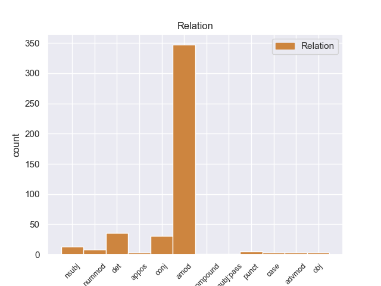
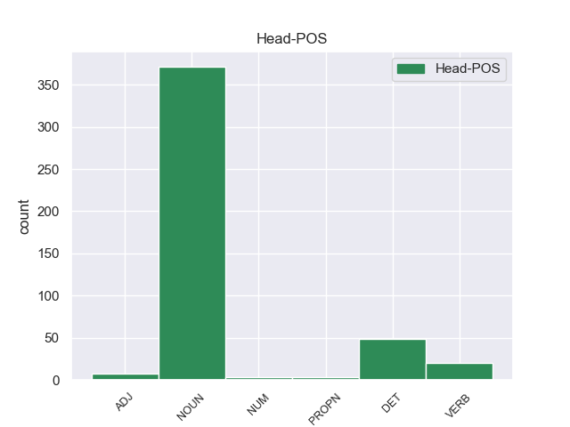
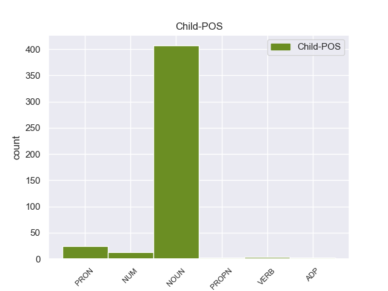

Distribution of features within this leaf



Agreement Rules sorted by frequency.
- When the dependent token is the adjectival modifier(amod) of the head token, and the dependent token is NOUN.
1 Υπ' _ _ _ _ 0 _ _ _
2 αυτές _ _ _ _ 0 _ _ _
3 τις _ _ _ _ 0 _ _ _
4 συνθήκες _ _ _ _ 0 _ _ _
5 , _ _ _ _ 0 _ _ _
6 η _ _ _ _ 0 _ _ _
7 Επιτροπή _ _ _ _ 0 _ _ _
8 Νομικών _ _ _ _ 0 _ _ _
9 Θεμάτων _ _ _ _ 0 _ _ _
10 , _ _ _ _ 0 _ _ _
11 της _ _ _ _ 0 _ _ _
12 οποίας _ _ _ _ 0 _ _ _
13 τη _ _ _ _ 0 _ _ _
14 θέση _ _ _ _ 0 _ _ _
15 αποδέχομαι _ _ _ _ 0 _ _ _
16 πλήρως _ _ _ _ 0 _ _ _
17 , _ _ _ _ 0 _ _ _
18 προτείνει _ _ _ _ 0 _ _ _
19 την _ _ _ _ 0 _ _ _
20 απόρριψη απόρριψη NOUN _ Case=Acc|Gender=Fem|Number=Sing 22 amod _ _
21 της _ _ _ _ 0 _ _ _
22 αίτησης ο NOUN _ Case=Acc|Gender=Fem|Number=Sing 0 _ _ _
23 άρσης _ _ _ _ 0 _ _ _
24 της _ _ _ _ 0 _ _ _
25 βουλευτικής _ _ _ _ 0 _ _ _
26 ασυλίας _ _ _ _ 0 _ _ _
27 την _ _ _ _ 0 _ _ _
28 οποία _ _ _ _ 0 _ _ _
29 υπέβαλε _ _ _ _ 0 _ _ _
30 το _ _ _ _ 0 _ _ _
31 γαλλικό _ _ _ _ 0 _ _ _
32 Υπουργείο _ _ _ _ 0 _ _ _
33 Δικαιοσύνης _ _ _ _ 0 _ _ _
34 , _ _ _ _ 0 _ _ _
35 σ _ _ _ _ 0 _ _ _
36 τη _ _ _ _ 0 _ _ _
37 μορφή _ _ _ _ 0 _ _ _
38 υπό _ _ _ _ 0 _ _ _
39 την _ _ _ _ 0 _ _ _
40 οποία _ _ _ _ 0 _ _ _
41 υποβλήθηκε _ _ _ _ 0 _ _ _
42 σ _ _ _ _ 0 _ _ _
43 το _ _ _ _ 0 _ _ _
44 Κοινοβούλιο _ _ _ _ 0 _ _ _
45 . _ _ _ _ 0 _ _ _
1 Υπ' _ _ _ _ 0 _ _ _
2 αυτές _ _ _ _ 0 _ _ _
3 τις _ _ _ _ 0 _ _ _
4 συνθήκες _ _ _ _ 0 _ _ _
5 , _ _ _ _ 0 _ _ _
6 η _ _ _ _ 0 _ _ _
7 Επιτροπή _ _ _ _ 0 _ _ _
8 Νομικών _ _ _ _ 0 _ _ _
9 Θεμάτων _ _ _ _ 0 _ _ _
10 , _ _ _ _ 0 _ _ _
11 της _ _ _ _ 0 _ _ _
12 οποίας _ _ _ _ 0 _ _ _
13 τη _ _ _ _ 0 _ _ _
14 θέση _ _ _ _ 0 _ _ _
15 αποδέχομαι ο NOUN _ Case=Acc|Gender=Fem|Number=Sing 0 _ _ _
16 πλήρως _ _ _ _ 0 _ _ _
17 , _ _ _ _ 0 _ _ _
18 προτείνει _ _ _ _ 0 _ _ _
19 την _ _ _ _ 0 _ _ _
20 απόρριψη _ _ _ _ 0 _ _ _
21 της _ _ _ _ 0 _ _ _
22 αίτησης _ _ _ _ 0 _ _ _
23 άρσης _ _ _ _ 0 _ _ _
24 της _ _ _ _ 0 _ _ _
25 βουλευτικής _ _ _ _ 0 _ _ _
26 ασυλίας _ _ _ _ 0 _ _ _
27 την _ _ _ _ 0 _ _ _
28 οποία _ _ _ _ 0 _ _ _
29 υπέβαλε _ _ _ _ 0 _ _ _
30 το _ _ _ _ 0 _ _ _
31 γαλλικό _ _ _ _ 0 _ _ _
32 Υπουργείο _ _ _ _ 0 _ _ _
33 Δικαιοσύνης _ _ _ _ 0 _ _ _
34 , _ _ _ _ 0 _ _ _
35 σ _ _ _ _ 0 _ _ _
36 τη _ _ _ _ 0 _ _ _
37 μορφή _ _ _ _ 0 _ _ _
38 υπό _ _ _ _ 0 _ _ _
39 την _ _ _ _ 0 _ _ _
40 οποία _ _ _ _ 0 _ _ _
41 υποβλήθηκε υποβλήθηκε NOUN _ Case=Acc|Gender=Fem|Number=Sing 15 conj _ _
42 σ _ _ _ _ 0 _ _ _
43 το _ _ _ _ 0 _ _ _
44 Κοινοβούλιο _ _ _ _ 0 _ _ _
45 . _ _ _ _ 0 _ _ _
1 Υπάρχει _ _ _ _ 0 _ _ _
2 μια _ _ _ _ 0 _ _ _
3 άλλη άλλος PRON PRON Case=Nom|Gender=Fem|Number=Sing|Person=3|PronType=Ind 4 det _ _
4 πλευρά πλευρά NOUN NOUN Case=Nom|Gender=Fem|Number=Sing 0 _ _ _
5 της _ _ _ _ 0 _ _ _
6 υπόθεσης _ _ _ _ 0 _ _ _
7 , _ _ _ _ 0 _ _ _
8 η _ _ _ _ 0 _ _ _
9 οποία _ _ _ _ 0 _ _ _
10 , _ _ _ _ 0 _ _ _
11 δυστυχώς _ _ _ _ 0 _ _ _
12 , _ _ _ _ 0 _ _ _
13 γεννά _ _ _ _ 0 _ _ _
14 την _ _ _ _ 0 _ _ _
15 υποψία _ _ _ _ 0 _ _ _
16 ότι _ _ _ _ 0 _ _ _
17 η _ _ _ _ 0 _ _ _
18 πρόνοια _ _ _ _ 0 _ _ _
19 σχετικά _ _ _ _ 0 _ _ _
20 με _ _ _ _ 0 _ _ _
21 τις _ _ _ _ 0 _ _ _
22 προϋποθέσεις _ _ _ _ 0 _ _ _
23 ελεύθερης _ _ _ _ 0 _ _ _
24 διεξαγωγής _ _ _ _ 0 _ _ _
25 του _ _ _ _ 0 _ _ _
26 κοινοβουλευτικού _ _ _ _ 0 _ _ _
27 έργου _ _ _ _ 0 _ _ _
28 δεν _ _ _ _ 0 _ _ _
29 απασχόλησε _ _ _ _ 0 _ _ _
30 επαρκώς _ _ _ _ 0 _ _ _
31 την _ _ _ _ 0 _ _ _
32 εισαγγελική _ _ _ _ 0 _ _ _
33 αρχή _ _ _ _ 0 _ _ _
34 : _ _ _ _ 0 _ _ _
1 Υπάρχει _ _ _ _ 0 _ _ _
2 μια _ _ _ _ 0 _ _ _
3 κατηγορία _ _ _ _ 0 _ _ _
4 εναντίον _ _ _ _ 0 _ _ _
5 του _ _ _ _ 0 _ _ _
6 κ. _ _ _ _ 0 _ _ _
7 Pasqua _ _ _ _ 0 _ _ _
8 , _ _ _ _ 0 _ _ _
9 αλλά _ _ _ _ 0 _ _ _
10 όχι _ _ _ _ 0 _ _ _
11 εναντίον _ _ _ _ 0 _ _ _
12 του _ _ _ _ 0 _ _ _
13 κ. _ _ _ _ 0 _ _ _
14 Marchiani _ _ _ _ 0 _ _ _
15 , _ _ _ _ 0 _ _ _
16 για _ _ _ _ 0 _ _ _
17 παράνομη _ _ _ _ 0 _ _ _
18 χρηματοδότηση _ _ _ _ 0 _ _ _
19 προεκλογικής _ _ _ _ 0 _ _ _
20 εκστρατείας _ _ _ _ 0 _ _ _
21 μέσω _ _ _ _ 0 _ _ _
22 αποδοχής ο DET _ Case=Acc|Gender=Fem|Number=Sing 0 _ _ _
23 δωρεών _ _ _ _ 0 _ _ _
24 και _ _ _ _ 0 _ _ _
25 χρηματοδότησης _ _ _ _ 0 _ _ _
26 της _ _ _ _ 0 _ _ _
27 εκστρατείας _ _ _ _ 0 _ _ _
28 για _ _ _ _ 0 _ _ _
29 τις _ _ _ _ 0 _ _ _
30 ευρωπαϊκές _ _ _ _ 0 _ _ _
31 εκλογές ο NOUN _ Case=Acc|Gender=Fem|Number=Sing 22 det _ _
32 , _ _ _ _ 0 _ _ _
33 κατά _ _ _ _ 0 _ _ _
34 παράβαση _ _ _ _ 0 _ _ _
35 των _ _ _ _ 0 _ _ _
36 διατάξεων _ _ _ _ 0 _ _ _
37 του _ _ _ _ 0 _ _ _
38 άρθρου _ _ _ _ 0 _ _ _
39 L _ _ _ _ 0 _ _ _
40 52.8 _ _ _ _ 0 _ _ _
41 του _ _ _ _ 0 _ _ _
42 Εκλογικού _ _ _ _ 0 _ _ _
43 Κώδικα _ _ _ _ 0 _ _ _
44 . _ _ _ _ 0 _ _ _
1 Δεκάδες _ _ _ _ 0 _ _ _
2 χιλιάδες χιλιάδα NUM NUM Case=Nom|Gender=Fem|Number=Plur|NumType=Sets 3 nummod _ _
3 πολίτες πολίτης NOUN NOUN Case=Nom|Gender=Masc|Number=Plur 0 _ _ _
4 έμειναν _ _ _ _ 0 _ _ _
5 χωρίς _ _ _ _ 0 _ _ _
6 ηλεκτρικό _ _ _ _ 0 _ _ _
7 ρεύμα _ _ _ _ 0 _ _ _
8 την _ _ _ _ 0 _ _ _
9 Τρίτη _ _ _ _ 0 _ _ _
10 , _ _ _ _ 0 _ _ _
11 ενώ _ _ _ _ 0 _ _ _
12 τα _ _ _ _ 0 _ _ _
13 σωστικά _ _ _ _ 0 _ _ _
14 συνεργεία _ _ _ _ 0 _ _ _
15 έδιναν _ _ _ _ 0 _ _ _
16 μάχη _ _ _ _ 0 _ _ _
17 με _ _ _ _ 0 _ _ _
18 τον _ _ _ _ 0 _ _ _
19 χρόνο _ _ _ _ 0 _ _ _
20 για _ _ _ _ 0 _ _ _
21 τη _ _ _ _ 0 _ _ _
22 διάσωση _ _ _ _ 0 _ _ _
23 ανθρώπων _ _ _ _ 0 _ _ _
24 . _ _ _ _ 0 _ _ _
1 Εάν _ _ _ _ 0 _ _ _
2 θέλουμε _ _ _ _ 0 _ _ _
3 να _ _ _ _ 0 _ _ _
4 φέρουμε φέρουμε NOUN _ Case=Acc|Gender=Fem|Number=Sing 0 _ _ _
5 εις _ _ _ _ 0 _ _ _
6 πέρας πέρας NOUN _ Case=Acc|Gender=Fem|Number=Sing 4 nsubj _ _
7 το _ _ _ _ 0 _ _ _
8 μεταρρυθμιστικό _ _ _ _ 0 _ _ _
9 πρόγραμμα _ _ _ _ 0 _ _ _
10 που _ _ _ _ 0 _ _ _
11 παρουσιάσατε _ _ _ _ 0 _ _ _
12 , _ _ _ _ 0 _ _ _
13 τότε _ _ _ _ 0 _ _ _
14 το _ _ _ _ 0 _ _ _
15 Σώμα _ _ _ _ 0 _ _ _
16 πρέπει _ _ _ _ 0 _ _ _
17 να _ _ _ _ 0 _ _ _
18 αποκτήσει _ _ _ _ 0 _ _ _
19 ένα _ _ _ _ 0 _ _ _
20 esprit _ _ _ _ 0 _ _ _
21 de _ _ _ _ 0 _ _ _
22 corps _ _ _ _ 0 _ _ _
23 . _ _ _ _ 0 _ _ _
1 Ο _ _ _ _ 0 _ _ _
2 Μπαράκ _ _ _ _ 0 _ _ _
3 Ομπάμα _ _ _ _ 0 _ _ _
4 ανέφερε _ _ _ _ 0 _ _ _
5 ότι _ _ _ _ 0 _ _ _
6 « _ _ _ _ 0 _ _ _
7 ήδη _ _ _ _ 0 _ _ _
8 υπάρχουν _ _ _ _ 0 _ _ _
9 πολλές _ _ _ _ 0 _ _ _
10 αναφορές _ _ _ _ 0 _ _ _
11 για _ _ _ _ 0 _ _ _
12 πόλεμο πόλεμος NOUN _ Case=Acc|Gender=Neut|Number=Plur 28 punct _ _
13 με _ _ _ _ 0 _ _ _
14 το _ _ _ _ 0 _ _ _
15 Ιράν _ _ _ _ 0 _ _ _
16 » _ _ _ _ 0 _ _ _
17 και _ _ _ _ 0 _ _ _
18 επεσήμανε _ _ _ _ 0 _ _ _
19 τέτοιες _ _ _ _ 0 _ _ _
20 συζητήσεις _ _ _ _ 0 _ _ _
21 « _ _ _ _ 0 _ _ _
22 είναι _ _ _ _ 0 _ _ _
23 προς _ _ _ _ 0 _ _ _
24 όφελος _ _ _ _ 0 _ _ _
25 της _ _ _ _ 0 _ _ _
26 Τεχεράνης _ _ _ _ 0 _ _ _
27 γιατί _ _ _ _ 0 _ _ _
28 αυξάνουν ο DET _ Case=Acc|Gender=Fem|Number=Sing 0 _ _ _
29 τις _ _ _ _ 0 _ _ _
30 τιμές _ _ _ _ 0 _ _ _
31 του _ _ _ _ 0 _ _ _
32 πετρελαίου _ _ _ _ 0 _ _ _
33 , _ _ _ _ 0 _ _ _
34 σ _ _ _ _ 0 _ _ _
35 το _ _ _ _ 0 _ _ _
36 οποίο _ _ _ _ 0 _ _ _
37 βασίζεται _ _ _ _ 0 _ _ _
38 η _ _ _ _ 0 _ _ _
39 Ιρανική _ _ _ _ 0 _ _ _
40 Κυβέρνηση _ _ _ _ 0 _ _ _
41 για _ _ _ _ 0 _ _ _
42 την _ _ _ _ 0 _ _ _
43 χρηματοδότηση _ _ _ _ 0 _ _ _
44 του _ _ _ _ 0 _ _ _
45 πυρηνικού _ _ _ _ 0 _ _ _
46 της _ _ _ _ 0 _ _ _
47 προγράμματος _ _ _ _ 0 _ _ _
48 » _ _ _ _ 0 _ _ _
49 . _ _ _ _ 0 _ _ _
1 Σ' _ _ _ _ 0 _ _ _
2 αυτό _ _ _ _ 0 _ _ _
3 το _ _ _ _ 0 _ _ _
4 σημείο _ _ _ _ 0 _ _ _
5 , _ _ _ _ 0 _ _ _
6 κύριε _ _ _ _ 0 _ _ _
7 Προεδρεύοντα _ _ _ _ 0 _ _ _
8 του _ _ _ _ 0 _ _ _
9 Συμβουλίου _ _ _ _ 0 _ _ _
10 , _ _ _ _ 0 _ _ _
11 σας _ _ _ _ 0 _ _ _
12 εφιστώ _ _ _ _ 0 _ _ _
13 την _ _ _ _ 0 _ _ _
14 προσοχή _ _ _ _ 0 _ _ _
15 σ _ _ _ _ 0 _ _ _
16 το _ _ _ _ 0 _ _ _
17 ψήφισμα _ _ _ _ 0 _ _ _
18 του _ _ _ _ 0 _ _ _
19 Ευρωπαϊκού _ _ _ _ 0 _ _ _
20 Κοινοβουλίου _ _ _ _ 0 _ _ _
21 σχετικά _ _ _ _ 0 _ _ _
22 με _ _ _ _ 0 _ _ _
23 τις _ _ _ _ 0 _ _ _
24 υπηρεσίες _ _ _ _ 0 _ _ _
25 γενικού _ _ _ _ 0 _ _ _
26 ενδιαφέροντος _ _ _ _ 0 _ _ _
27 , _ _ _ _ 0 _ _ _
28 που που PRON PRON Case=Nom|Gender=Neut|Number=Sing|Person=3|PronType=Rel 31 nsubj _ _
29 ήταν _ _ _ _ 0 _ _ _
30 πολύ _ _ _ _ 0 _ _ _
31 σαφές σαφής ADJ ADJ Case=Nom|Gender=Neut|Number=Sing 0 _ _ _
32 . _ _ _ _ 0 _ _ _
1 Σύμφωνα _ _ _ _ 0 _ _ _
2 με _ _ _ _ 0 _ _ _
3 αναφορές _ _ _ _ 0 _ _ _
4 , _ _ _ _ 0 _ _ _
5 το _ _ _ _ 0 _ _ _
6 νησί _ _ _ _ 0 _ _ _
7 πρωτοκατοικήθηκε _ _ _ _ 0 _ _ _
8 την _ _ _ _ 0 _ _ _
9 Παλαιοιλιθική _ _ _ _ 0 _ _ _
10 εποχή _ _ _ _ 0 _ _ _
11 , _ _ _ _ 0 _ _ _
12 αποικήθηκε _ _ _ _ 0 _ _ _
13 το _ _ _ _ 0 _ _ _
14 775-_750 _ _ _ _ 0 _ _ _
15 π.Χ. _ _ _ _ 0 _ _ _
16 από _ _ _ _ 0 _ _ _
17 τους _ _ _ _ 0 _ _ _
18 Ερετριείς Ερετριεύς PROPN PROPN Case=Acc|Gender=Masc|Number=Plur 0 _ _ _
19 και _ _ _ _ 0 _ _ _
20 σ _ _ _ _ 0 _ _ _
21 τη _ _ _ _ 0 _ _ _
22 συνέχεια _ _ _ _ 0 _ _ _
23 από _ _ _ _ 0 _ _ _
24 τους _ _ _ _ 0 _ _ _
25 Κορίνθιους Κορίνθιος PROPN PROPN Case=Acc|Gender=Masc|Number=Plur 18 conj _ _
26 ενώ _ _ _ _ 0 _ _ _
27 σύμφωνα _ _ _ _ 0 _ _ _
28 με _ _ _ _ 0 _ _ _
29 τον _ _ _ _ 0 _ _ _
30 Όμηρο _ _ _ _ 0 _ _ _
31 , _ _ _ _ 0 _ _ _
32 εδώ _ _ _ _ 0 _ _ _
33 βρήκε _ _ _ _ 0 _ _ _
34 καταφύγιο _ _ _ _ 0 _ _ _
35 ο _ _ _ _ 0 _ _ _
36 Οδυσσέας _ _ _ _ 0 _ _ _
37 . _ _ _ _ 0 _ _ _
1 Κάθε _ _ _ _ 0 _ _ _
2 τράπεζα _ _ _ _ 0 _ _ _
3 οφείλει _ _ _ _ 0 _ _ _
4 αμέσως _ _ _ _ 0 _ _ _
5 μετά μετά ADP _ Case=Acc|Gender=Fem|Number=Sing 24 case _ _
6 την _ _ _ _ 0 _ _ _
7 παρέλευση _ _ _ _ 0 _ _ _
8 του _ _ _ _ 0 _ _ _
9 χρονικού _ _ _ _ 0 _ _ _
10 ορίου _ _ _ _ 0 _ _ _
11 της _ _ _ _ 0 _ _ _
12 εικοσαετίας _ _ _ _ 0 _ _ _
13 να _ _ _ _ 0 _ _ _
14 αποδίδει _ _ _ _ 0 _ _ _
15 σ _ _ _ _ 0 _ _ _
16 το _ _ _ _ 0 _ _ _
17 Δημόσιο _ _ _ _ 0 _ _ _
18 συγκεντρωτικά _ _ _ _ 0 _ _ _
19 μέχρι _ _ _ _ 0 _ _ _
20 το _ _ _ _ 0 _ _ _
21 τέλος _ _ _ _ 0 _ _ _
22 Απριλίου _ _ _ _ 0 _ _ _
23 κάθε _ _ _ _ 0 _ _ _
24 έτους έτους DET _ Case=Acc|Gender=Fem|Number=Sing 0 _ _ _
25 τα _ _ _ _ 0 _ _ _
26 υπόλοιπα _ _ _ _ 0 _ _ _
27 των _ _ _ _ 0 _ _ _
28 αδρανών _ _ _ _ 0 _ _ _
29 καταθέσεων _ _ _ _ 0 _ _ _
30 , _ _ _ _ 0 _ _ _
31 πλέον _ _ _ _ 0 _ _ _
32 αναλογούντων _ _ _ _ 0 _ _ _
33 τόκων _ _ _ _ 0 _ _ _
34 που _ _ _ _ 0 _ _ _
35 έκλεισαν _ _ _ _ 0 _ _ _
36 κατά _ _ _ _ 0 _ _ _
37 τη _ _ _ _ 0 _ _ _
38 διάρκεια _ _ _ _ 0 _ _ _
39 του _ _ _ _ 0 _ _ _
40 προηγούμενου _ _ _ _ 0 _ _ _
41 έτους _ _ _ _ 0 _ _ _
42 , _ _ _ _ 0 _ _ _
43 καταθέτοντας _ _ _ _ 0 _ _ _
44 σ _ _ _ _ 0 _ _ _
45 την _ _ _ _ 0 _ _ _
46 Τράπεζα _ _ _ _ 0 _ _ _
47 της _ _ _ _ 0 _ _ _
48 Ελλάδος _ _ _ _ 0 _ _ _
49 τα _ _ _ _ 0 _ _ _
50 σχετικά _ _ _ _ 0 _ _ _
51 ποσά _ _ _ _ 0 _ _ _
52 σε _ _ _ _ 0 _ _ _
53 ειδικό _ _ _ _ 0 _ _ _
54 λογαριασμό _ _ _ _ 0 _ _ _
55 . _ _ _ _ 0 _ _ _
1 Για _ _ _ _ 0 _ _ _
2 τον _ _ _ _ 0 _ _ _
3 λόγο _ _ _ _ 0 _ _ _
4 αυτό _ _ _ _ 0 _ _ _
5 , _ _ _ _ 0 _ _ _
6 κύριε _ _ _ _ 0 _ _ _
7 Ύπατε ύπατε NOUN _ Case=Acc|Gender=Fem|Number=Sing 11 advmod _ _
8 Εκπρόσωπε _ _ _ _ 0 _ _ _
9 , _ _ _ _ 0 _ _ _
10 να _ _ _ _ 0 _ _ _
11 σκεφτούμε σκεφτούμος NOUN _ Case=Acc|Gender=Fem|Number=Sing 0 _ _ _
12 και _ _ _ _ 0 _ _ _
13 μαζί _ _ _ _ 0 _ _ _
14 με _ _ _ _ 0 _ _ _
15 μας _ _ _ _ 0 _ _ _
16 θα _ _ _ _ 0 _ _ _
17 πρέπει _ _ _ _ 0 _ _ _
18 να _ _ _ _ 0 _ _ _
19 σκεφτεί _ _ _ _ 0 _ _ _
20 και _ _ _ _ 0 _ _ _
21 η _ _ _ _ 0 _ _ _
22 Επιτροπή _ _ _ _ 0 _ _ _
23 κατά _ _ _ _ 0 _ _ _
24 πόσο _ _ _ _ 0 _ _ _
25 μπορούμε _ _ _ _ 0 _ _ _
26 να _ _ _ _ 0 _ _ _
27 χρησιμοποιήσουμε _ _ _ _ 0 _ _ _
28 τα _ _ _ _ 0 _ _ _
29 μέσα _ _ _ _ 0 _ _ _
30 που _ _ _ _ 0 _ _ _
31 διαθέτουμε _ _ _ _ 0 _ _ _
32 μέσω _ _ _ _ 0 _ _ _
33 της _ _ _ _ 0 _ _ _
34 συμφωνίας _ _ _ _ 0 _ _ _
35 σύνδεσης _ _ _ _ 0 _ _ _
36 με _ _ _ _ 0 _ _ _
37 το _ _ _ _ 0 _ _ _
38 Ισραήλ _ _ _ _ 0 _ _ _
39 , _ _ _ _ 0 _ _ _
40 φτάνοντας _ _ _ _ 0 _ _ _
41 ακόμα _ _ _ _ 0 _ _ _
42 και _ _ _ _ 0 _ _ _
43 σ _ _ _ _ 0 _ _ _
44 την _ _ _ _ 0 _ _ _
45 αναστολή _ _ _ _ 0 _ _ _
46 της _ _ _ _ 0 _ _ _
47 εν _ _ _ _ 0 _ _ _
48 λόγω _ _ _ _ 0 _ _ _
49 συμφωνίας _ _ _ _ 0 _ _ _
50 . _ _ _ _ 0 _ _ _
1 Ο _ _ _ _ 0 _ _ _
2 πρόεδρος _ _ _ _ 0 _ _ _
3 Ομπάμα _ _ _ _ 0 _ _ _
4 εξέφρασε _ _ _ _ 0 _ _ _
5 τα _ _ _ _ 0 _ _ _
6 συλλυπητήριά _ _ _ _ 0 _ _ _
7 του _ _ _ _ 0 _ _ _
8 προς _ _ _ _ 0 _ _ _
9 τα _ _ _ _ 0 _ _ _
10 θύματα _ _ _ _ 0 _ _ _
11 , _ _ _ _ 0 _ _ _
12 ενώ _ _ _ _ 0 _ _ _
13 δεσμεύτηκε _ _ _ _ 0 _ _ _
14 ότι _ _ _ _ 0 _ _ _
15 η _ _ _ _ 0 _ _ _
16 κυβέρνηση _ _ _ _ 0 _ _ _
17 θα _ _ _ _ 0 _ _ _
18 βοηθήσει _ _ _ _ 0 _ _ _
19 τους _ _ _ _ 0 _ _ _
20 πληγέντες _ _ _ _ 0 _ _ _
21 να _ _ _ _ 0 _ _ _
22 ανακτήσουν _ _ _ _ 0 _ _ _
23 τις _ _ _ _ 0 _ _ _
24 δυνάμεις _ _ _ _ 0 _ _ _
25 τους _ _ _ _ 0 _ _ _
26 και _ _ _ _ 0 _ _ _
27 να _ _ _ _ 0 _ _ _
28 αποκαταστήσουν ο VERB _ Case=Acc|Gender=Fem|Number=Sing 0 _ _ _
29 τις _ _ _ _ 0 _ _ _
30 ζημιές ζημιές NOUN _ Case=Acc|Gender=Fem|Number=Sing 28 obj _ _
31 . _ _ _ _ 0 _ _ _
1 Αυτό _ _ _ _ 0 _ _ _
2 είναι _ _ _ _ 0 _ _ _
3 επειδή _ _ _ _ 0 _ _ _
4 το _ _ _ _ 0 _ _ _
5 κείμενο _ _ _ _ 0 _ _ _
6 δεν _ _ _ _ 0 _ _ _
7 περιέχει _ _ _ _ 0 _ _ _
8 έκκληση _ _ _ _ 0 _ _ _
9 προς _ _ _ _ 0 _ _ _
10 τις _ _ _ _ 0 _ _ _
11 δύο _ _ _ _ 0 _ _ _
12 πλευρές πλευρά NOUN NOUN Case=Acc|Gender=Fem|Number=Plur 0 _ _ _
13 ( _ _ _ _ 0 _ _ _
14 αντάρτες αντάρτης NOUN NOUN Case=Acc|Gender=Masc|Number=Plur 12 appos _ _
15 και _ _ _ _ 0 _ _ _
16 κυβέρνηση _ _ _ _ 0 _ _ _
17 ) _ _ _ _ 0 _ _ _
18 για _ _ _ _ 0 _ _ _
19 άμεση _ _ _ _ 0 _ _ _
20 κατάπαυση _ _ _ _ 0 _ _ _
21 του _ _ _ _ 0 _ _ _
22 πυρός _ _ _ _ 0 _ _ _
23 » _ _ _ _ 0 _ _ _
24 , _ _ _ _ 0 _ _ _
25 δήλωσε _ _ _ _ 0 _ _ _
26 ο _ _ _ _ 0 _ _ _
27 Γκενάντι _ _ _ _ 0 _ _ _
28 Γκατίλοφ _ _ _ _ 0 _ _ _
29 , _ _ _ _ 0 _ _ _
30 Υφυπουργός _ _ _ _ 0 _ _ _
31 Εξωτερικών _ _ _ _ 0 _ _ _
32 της _ _ _ _ 0 _ _ _
33 Ρωσίας _ _ _ _ 0 _ _ _
34 . _ _ _ _ 0 _ _ _
1 Ένας ένας NUM NUM Case=Nom|Gender=Masc|Number=Sing|NumType=Card 6 nsubj _ _
2 από _ _ _ _ 0 _ _ _
3 αυτούς _ _ _ _ 0 _ _ _
4 είναι _ _ _ _ 0 _ _ _
5 ο _ _ _ _ 0 _ _ _
6 αριθμός αριθμός NOUN NOUN Case=Nom|Gender=Masc|Number=Sing 0 _ _ _
7 των _ _ _ _ 0 _ _ _
8 βίαιων _ _ _ _ 0 _ _ _
9 επιθέσεων _ _ _ _ 0 _ _ _
10 εναντίον _ _ _ _ 0 _ _ _
11 δημοσιογράφων _ _ _ _ 0 _ _ _
12 , _ _ _ _ 0 _ _ _
13 για _ _ _ _ 0 _ _ _
14 τις _ _ _ _ 0 _ _ _
15 οποίες _ _ _ _ 0 _ _ _
16 ευθύνονται _ _ _ _ 0 _ _ _
17 κυρίως _ _ _ _ 0 _ _ _
18 οπαδοί _ _ _ _ 0 _ _ _
19 της _ _ _ _ 0 _ _ _
20 νεοναζιστικής _ _ _ _ 0 _ _ _
21 οργάνωσης _ _ _ _ 0 _ _ _
22 που _ _ _ _ 0 _ _ _
23 εκπροσωπείται _ _ _ _ 0 _ _ _
24 σ _ _ _ _ 0 _ _ _
25 την _ _ _ _ 0 _ _ _
26 ελληνική _ _ _ _ 0 _ _ _
27 Βουλή _ _ _ _ 0 _ _ _
28 και _ _ _ _ 0 _ _ _
29 ένας _ _ _ _ 0 _ _ _
30 άλλος _ _ _ _ 0 _ _ _
31 λόγος _ _ _ _ 0 _ _ _
32 είναι _ _ _ _ 0 _ _ _
33 το _ _ _ _ 0 _ _ _
34 κλείσιμο _ _ _ _ 0 _ _ _
35 της _ _ _ _ 0 _ _ _
36 ελληνικής _ _ _ _ 0 _ _ _
37 δημόσιας _ _ _ _ 0 _ _ _
38 τηλεόρασης _ _ _ _ 0 _ _ _
39 και _ _ _ _ 0 _ _ _
40 ο _ _ _ _ 0 _ _ _
41 τρόπος _ _ _ _ 0 _ _ _
42 με _ _ _ _ 0 _ _ _
43 τον _ _ _ _ 0 _ _ _
44 οποίο _ _ _ _ 0 _ _ _
45 έγινε _ _ _ _ 0 _ _ _
46 αυτό _ _ _ _ 0 _ _ _
47 " _ _ _ _ 0 _ _ _
48 , _ _ _ _ 0 _ _ _
49 επεσήμανε _ _ _ _ 0 _ _ _
50 η _ _ _ _ 0 _ _ _
51 κ. _ _ _ _ 0 _ _ _
52 Χολγκάντ _ _ _ _ 0 _ _ _
53 . _ _ _ _ 0 _ _ _
1 Το _ _ _ _ 0 _ _ _
2 χαντάκι _ _ _ _ 0 _ _ _
3 έχει _ _ _ _ 0 _ _ _
4 βάθος _ _ _ _ 0 _ _ _
5 όσο _ _ _ _ 0 _ _ _
6 το _ _ _ _ 0 _ _ _
7 ύψος _ _ _ _ 0 _ _ _
8 ενός _ _ _ _ 0 _ _ _
9 ανθρώπου _ _ _ _ 0 _ _ _
10 και _ _ _ _ 0 _ _ _
11 διπλάσιο διπλάσιος NUM NUM Case=Acc|Gender=Masc|Number=Sing|NumType=Mult 12 amod _ _
12 πλάτος πλάτος NOUN NOUN Case=Acc|Gender=Masc|Number=Sing 0 _ _ _
13 . _ _ _ _ 0 _ _ _
1 Για _ _ _ _ 0 _ _ _
2 τον _ _ _ _ 0 _ _ _
3 λόγο _ _ _ _ 0 _ _ _
4 αυτόν _ _ _ _ 0 _ _ _
5 θεωρούμε _ _ _ _ 0 _ _ _
6 σημαντικό _ _ _ _ 0 _ _ _
7 να _ _ _ _ 0 _ _ _
8 γίνεται _ _ _ _ 0 _ _ _
9 μεν _ _ _ _ 0 _ _ _
10 η _ _ _ _ 0 _ _ _
11 σχετική _ _ _ _ 0 _ _ _
12 εκπαίδευση _ _ _ _ 0 _ _ _
13 , _ _ _ _ 0 _ _ _
14 όχι _ _ _ _ 0 _ _ _
15 όμως _ _ _ _ 0 _ _ _
16 δύο _ _ _ _ 0 _ _ _
17 φορές _ _ _ _ 0 _ _ _
18 , _ _ _ _ 0 _ _ _
19 μία ένας NUM NUM Case=Nom|Gender=Fem|Number=Sing|NumType=Card 0 _ _ _
20 για _ _ _ _ 0 _ _ _
21 την _ _ _ _ 0 _ _ _
22 απόκτηση _ _ _ _ 0 _ _ _
23 της _ _ _ _ 0 _ _ _
24 άδειας _ _ _ _ 0 _ _ _
25 οδήγησης _ _ _ _ 0 _ _ _
26 και _ _ _ _ 0 _ _ _
27 μία ένας NUM NUM Case=Nom|Gender=Fem|Number=Sing|NumType=Card 19 conj _ _
28 σ _ _ _ _ 0 _ _ _
29 το _ _ _ _ 0 _ _ _
30 πλαίσιο _ _ _ _ 0 _ _ _
31 της _ _ _ _ 0 _ _ _
32 κατάρτισης _ _ _ _ 0 _ _ _
33 . _ _ _ _ 0 _ _ _
1 Αναφέρω _ _ _ _ 0 _ _ _
2 ένα _ _ _ _ 0 _ _ _
3 συγκεκριμένο _ _ _ _ 0 _ _ _
4 παράδειγμα παράδειγμα NOUN NOUN Case=Acc|Gender=Neut|Number=Sing 0 _ _ _
5 : _ _ _ _ 0 _ _ _
6 την _ _ _ _ 0 _ _ _
7 Τσετσενία Τσετσενία PROPN PROPN Case=Acc|Gender=Fem|Number=Sing 4 appos _ SpaceAfter=No
8 . _ _ _ _ 0 _ _ _
1 Δεκάδες δεκάδα NUM NUM Case=Nom|Gender=Fem|Number=Plur|NumType=Sets 2 compound _ _
2 χιλιάδες χιλιάδα NUM NUM Case=Nom|Gender=Fem|Number=Plur|NumType=Sets 0 _ _ _
3 πολίτες _ _ _ _ 0 _ _ _
4 έμειναν _ _ _ _ 0 _ _ _
5 χωρίς _ _ _ _ 0 _ _ _
6 ηλεκτρικό _ _ _ _ 0 _ _ _
7 ρεύμα _ _ _ _ 0 _ _ _
8 την _ _ _ _ 0 _ _ _
9 Τρίτη _ _ _ _ 0 _ _ _
10 , _ _ _ _ 0 _ _ _
11 ενώ _ _ _ _ 0 _ _ _
12 τα _ _ _ _ 0 _ _ _
13 σωστικά _ _ _ _ 0 _ _ _
14 συνεργεία _ _ _ _ 0 _ _ _
15 έδιναν _ _ _ _ 0 _ _ _
16 μάχη _ _ _ _ 0 _ _ _
17 με _ _ _ _ 0 _ _ _
18 τον _ _ _ _ 0 _ _ _
19 χρόνο _ _ _ _ 0 _ _ _
20 για _ _ _ _ 0 _ _ _
21 τη _ _ _ _ 0 _ _ _
22 διάσωση _ _ _ _ 0 _ _ _
23 ανθρώπων _ _ _ _ 0 _ _ _
24 . _ _ _ _ 0 _ _ _
1 Το _ _ _ _ 0 _ _ _
2 παράρτημα _ _ _ _ 0 _ _ _
3 του _ _ _ _ 0 _ _ _
4 Ερυθρού _ _ _ _ 0 _ _ _
5 Σταυρού _ _ _ _ 0 _ _ _
6 σ _ _ _ _ 0 _ _ _
7 τη _ _ _ _ 0 _ _ _
8 Γαλλία _ _ _ _ 0 _ _ _
9 ανέφερε _ _ _ _ 0 _ _ _
10 ότι _ _ _ _ 0 _ _ _
11 " _ _ _ _ 0 _ _ _
12 φέτος _ _ _ _ 0 _ _ _
13 παρατηρείται _ _ _ _ 0 _ _ _
14 αύξηση ο NOUN _ Case=Acc|Gender=Fem|Number=Sing 0 _ _ _
15 της _ _ _ _ 0 _ _ _
16 τάξεως _ _ _ _ 0 _ _ _
17 του _ _ _ _ 0 _ _ _
18 14% _ _ _ _ 0 _ _ _
19 , _ _ _ _ 0 _ _ _
20 όσον _ _ _ _ 0 _ _ _
21 αφορά _ _ _ _ 0 _ _ _
22 τα _ _ _ _ 0 _ _ _
23 άτομα _ _ _ _ 0 _ _ _
24 που _ _ _ _ 0 _ _ _
25 ζητούν ζητούν VERB _ Case=Acc|Gender=Fem|Number=Sing 14 conj _ _
26 βοήθεια _ _ _ _ 0 _ _ _
27 σε _ _ _ _ 0 _ _ _
28 σχέση _ _ _ _ 0 _ _ _
29 με _ _ _ _ 0 _ _ _
30 πέρσι _ _ _ _ 0 _ _ _
31 " _ _ _ _ 0 _ _ _
32 . _ _ _ _ 0 _ _ _
1 Ανάλογα _ _ _ _ 0 _ _ _
2 αυξήθηκε _ _ _ _ 0 _ _ _
3 και _ _ _ _ 0 _ _ _
4 ο _ _ _ _ 0 _ _ _
5 ανταγωνισμός _ _ _ _ 0 _ _ _
6 , _ _ _ _ 0 _ _ _
7 πράγμα _ _ _ _ 0 _ _ _
8 που _ _ _ _ 0 _ _ _
9 αναγκαστικά _ _ _ _ 0 _ _ _
10 είχε _ _ _ _ 0 _ _ _
11 επίσης _ _ _ _ 0 _ _ _
12 ως _ _ _ _ 0 _ _ _
13 αποτέλεσμα _ _ _ _ 0 _ _ _
14 να _ _ _ _ 0 _ _ _
15 υπάρχει _ _ _ _ 0 _ _ _
16 σε _ _ _ _ 0 _ _ _
17 πολλές _ _ _ _ 0 _ _ _
18 επιχειρήσεις _ _ _ _ 0 _ _ _
19 η _ _ _ _ 0 _ _ _
20 τάση _ _ _ _ 0 _ _ _
21 τούτο ο VERB _ Case=Acc|Gender=Fem|Number=Sing 23 det _ _
22 να _ _ _ _ 0 _ _ _
23 αποβεί ο VERB _ Case=Acc|Gender=Fem|Number=Sing 0 _ _ _
24 μερικώς _ _ _ _ 0 _ _ _
25 σε _ _ _ _ 0 _ _ _
26 βάρος _ _ _ _ 0 _ _ _
27 της _ _ _ _ 0 _ _ _
28 ασφάλειας _ _ _ _ 0 _ _ _
29 , _ _ _ _ 0 _ _ _
30 καθώς _ _ _ _ 0 _ _ _
31 και _ _ _ _ 0 _ _ _
32 των _ _ _ _ 0 _ _ _
33 συνθηκών _ _ _ _ 0 _ _ _
34 εργασίας _ _ _ _ 0 _ _ _
35 . _ _ _ _ 0 _ _ _
1 Κατά _ _ _ _ 0 _ _ _
2 κανόνα _ _ _ _ 0 _ _ _
3 , _ _ _ _ 0 _ _ _
4 για _ _ _ _ 0 _ _ _
5 τα _ _ _ _ 0 _ _ _
6 κεντρικά _ _ _ _ 0 _ _ _
7 σχέδια σχέδι NOUN _ Case=Acc|Gender=Fem|Number=Sing 0 _ _ _
8 περνούσαν _ _ _ _ 0 _ _ _
9 τέσσερις _ _ _ _ 0 _ _ _
10 έως έως NOUN _ Case=Acc|Gender=Fem|Number=Sing 7 case _ _
11 πέντε _ _ _ _ 0 _ _ _
12 μήνες _ _ _ _ 0 _ _ _
13 από _ _ _ _ 0 _ _ _
14 την _ _ _ _ 0 _ _ _
15 υποβολή _ _ _ _ 0 _ _ _
16 της _ _ _ _ 0 _ _ _
17 αίτησης _ _ _ _ 0 _ _ _
18 μέχρι _ _ _ _ 0 _ _ _
19 την _ _ _ _ 0 _ _ _
20 έγκριση _ _ _ _ 0 _ _ _
21 των _ _ _ _ 0 _ _ _
22 κονδυλίων _ _ _ _ 0 _ _ _
23 . _ _ _ _ 0 _ _ _
1 Ωστόσο _ _ _ _ 0 _ _ _
2 , _ _ _ _ 0 _ _ _
3 τα _ _ _ _ 0 _ _ _
4 τελευταία _ _ _ _ 0 _ _ _
5 χρόνια _ _ _ _ 0 _ _ _
6 δίνεται _ _ _ _ 0 _ _ _
7 άδεια άδει VERB _ Case=Acc|Gender=Fem|Number=Sing 15 amod _ _
8 σε _ _ _ _ 0 _ _ _
9 ορισμένους _ _ _ _ 0 _ _ _
10 φοιτητές _ _ _ _ 0 _ _ _
11 ανώτατων _ _ _ _ 0 _ _ _
12 εκπαιδευτικών _ _ _ _ 0 _ _ _
13 ιδρυμάτων _ _ _ _ 0 _ _ _
14 να _ _ _ _ 0 _ _ _
15 ψάχνουν ψάχνου NOUN _ Case=Acc|Gender=Fem|Number=Sing 0 _ _ _
16 πράγματα _ _ _ _ 0 _ _ _
17 σ _ _ _ _ 0 _ _ _
18 το _ _ _ _ 0 _ _ _
19 διαδίκτυο _ _ _ _ 0 _ _ _
20 , _ _ _ _ 0 _ _ _
21 υπό _ _ _ _ 0 _ _ _
22 αυστηρούς _ _ _ _ 0 _ _ _
23 περιορισμούς _ _ _ _ 0 _ _ _
24 και _ _ _ _ 0 _ _ _
25 παρακολούθηση _ _ _ _ 0 _ _ _
26 . _ _ _ _ 0 _ _ _
1 Οι _ _ _ _ 0 _ _ _
2 Κρητικοί _ _ _ _ 0 _ _ _
3 άρχισαν άρχισαν VERB _ Case=Acc|Gender=Fem|Number=Sing 5 advmod _ _
4 να _ _ _ _ 0 _ _ _
5 συγκεντρώνουν συγκεντρώνουν NOUN _ Case=Acc|Gender=Fem|Number=Sing 0 _ _ _
6 ένοπλα _ _ _ _ 0 _ _ _
7 τμήματα _ _ _ _ 0 _ _ _
8 και _ _ _ _ 0 _ _ _
9 η _ _ _ _ 0 _ _ _
10 εκτελεστική _ _ _ _ 0 _ _ _
11 επιτροπή _ _ _ _ 0 _ _ _
12 προέβη _ _ _ _ 0 _ _ _
13 σε _ _ _ _ 0 _ _ _
14 διαβήματα _ _ _ _ 0 _ _ _
15 διαμαρτυρίας _ _ _ _ 0 _ _ _
16 , _ _ _ _ 0 _ _ _
17 με _ _ _ _ 0 _ _ _
18 συνέπεια _ _ _ _ 0 _ _ _
19 να _ _ _ _ 0 _ _ _
20 επισπευσθεί _ _ _ _ 0 _ _ _
21 η _ _ _ _ 0 _ _ _
22 εκλογή _ _ _ _ 0 _ _ _
23 του _ _ _ _ 0 _ _ _
24 πρίγκιπα _ _ _ _ 0 _ _ _
25 Γεωργίου _ _ _ _ 0 _ _ _
26 , _ _ _ _ 0 _ _ _
27 που _ _ _ _ 0 _ _ _
28 εκκρεμούσε _ _ _ _ 0 _ _ _
29 επί _ _ _ _ 0 _ _ _
30 εννεάμηνο _ _ _ _ 0 _ _ _
31 . _ _ _ _ 0 _ _ _
Disagree Examples:
1 Τα _ _ _ _ 0 _ _ _
2 μηχανήματα _ _ _ _ 0 _ _ _
3 αυτόματης _ _ _ _ 0 _ _ _
4 συναλλαγής _ _ _ _ 0 _ _ _
5 δεν _ _ _ _ 0 _ _ _
6 δίνουν _ _ _ _ 0 _ _ _
7 χαρτονομίσματα _ _ _ _ 0 _ _ _
8 των _ _ _ _ 0 _ _ _
9 είκοσι _ _ _ _ 0 _ _ _
10 ευρώ _ _ _ _ 0 _ _ _
11 , _ _ _ _ 0 _ _ _
12 ούτε _ _ _ _ 0 _ _ _
13 δέχονται _ _ _ _ 0 _ _ _
14 ευρώ _ _ _ _ 0 _ _ _
15 που _ _ _ _ 0 _ _ _
16 εκδόθηκαν _ _ _ _ 0 _ _ _
17 σε _ _ _ _ 0 _ _ _
18 άλλες _ _ _ _ 0 _ _ _
19 χώρες _ _ _ _ 0 _ _ _
20 και _ _ _ _ 0 _ _ _
21 οι _ _ _ _ 0 _ _ _
22 παραχαράκτες _ _ _ _ 0 _ _ _
23 ευνοούνται _ _ _ _ 0 _ _ _
24 καθώς _ _ _ _ 0 _ _ _
25 κανείς κανένας PRON PRON Case=Nom|Gender=Masc|Number=Sing|Person=3|PronType=Ind 29 det _ _
26 δεν _ _ _ _ 0 _ _ _
27 είναι _ _ _ _ 0 _ _ _
28 σε _ _ _ _ 0 _ _ _
29 θέση θέση NOUN NOUN Case=Acc|Gender=Fem|Number=Sing 0 _ _ _
30 να _ _ _ _ 0 _ _ _
31 αναγνωρίζει _ _ _ _ 0 _ _ _
32 τα _ _ _ _ 0 _ _ _
33 νέα _ _ _ _ 0 _ _ _
34 χαρτονομίσματα _ _ _ _ 0 _ _ _
35 . _ _ _ _ 0 _ _ _
1 Για _ _ _ _ 0 _ _ _
2 τον _ _ _ _ 0 _ _ _
3 λόγο _ _ _ _ 0 _ _ _
4 αυτόν _ _ _ _ 0 _ _ _
5 είναι _ _ _ _ 0 _ _ _
6 ιδιαίτερα _ _ _ _ 0 _ _ _
7 σημαντικό _ _ _ _ 0 _ _ _
8 να _ _ _ _ 0 _ _ _
9 δεχθούμε _ _ _ _ 0 _ _ _
10 αυτές _ _ _ _ 0 _ _ _
11 τις _ _ _ _ 0 _ _ _
12 τροπολογίες _ _ _ _ 0 _ _ _
13 , _ _ _ _ 0 _ _ _
14 έτσι _ _ _ _ 0 _ _ _
15 ώστε _ _ _ _ 0 _ _ _
16 η _ _ _ _ 0 _ _ _
17 διατύπωση _ _ _ _ 0 _ _ _
18 της _ _ _ _ 0 _ _ _
19 οδηγίας _ _ _ _ 0 _ _ _
20 αυτής _ _ _ _ 0 _ _ _
21 να _ _ _ _ 0 _ _ _
22 είναι _ _ _ _ 0 _ _ _
23 ίδια ίδιος ADJ ADJ Case=Nom|Gender=Fem|Number=Sing 0 _ _ _
24 με _ _ _ _ 0 _ _ _
25 αυτήν αυτός PRON PRON Case=Acc|Gender=Fem|Number=Sing|Person=3|PronType=Dem 23 det _ _
26 της _ _ _ _ 0 _ _ _
27 οδηγίας _ _ _ _ 0 _ _ _
28 για _ _ _ _ 0 _ _ _
29 τις _ _ _ _ 0 _ _ _
30 δημόσιες _ _ _ _ 0 _ _ _
31 προμήθειες _ _ _ _ 0 _ _ _
32 αγαθών _ _ _ _ 0 _ _ _
33 , _ _ _ _ 0 _ _ _
34 υπηρεσιών _ _ _ _ 0 _ _ _
35 και _ _ _ _ 0 _ _ _
36 την _ _ _ _ 0 _ _ _
37 ανάθεση _ _ _ _ 0 _ _ _
38 κατασκευαστικών _ _ _ _ 0 _ _ _
39 συμβάσεων _ _ _ _ 0 _ _ _
40 . _ _ _ _ 0 _ _ _
1 Ένας ένας NUM NUM Case=Nom|Gender=Masc|Number=Sing|NumType=Card 0 _ _ _
2 από _ _ _ _ 0 _ _ _
3 αυτούς αυτός PRON PRON Case=Acc|Gender=Masc|Number=Plur|Person=3|PronType=Dem 1 det _ _
4 είναι _ _ _ _ 0 _ _ _
5 ο _ _ _ _ 0 _ _ _
6 αριθμός _ _ _ _ 0 _ _ _
7 των _ _ _ _ 0 _ _ _
8 βίαιων _ _ _ _ 0 _ _ _
9 επιθέσεων _ _ _ _ 0 _ _ _
10 εναντίον _ _ _ _ 0 _ _ _
11 δημοσιογράφων _ _ _ _ 0 _ _ _
12 , _ _ _ _ 0 _ _ _
13 για _ _ _ _ 0 _ _ _
14 τις _ _ _ _ 0 _ _ _
15 οποίες _ _ _ _ 0 _ _ _
16 ευθύνονται _ _ _ _ 0 _ _ _
17 κυρίως _ _ _ _ 0 _ _ _
18 οπαδοί _ _ _ _ 0 _ _ _
19 της _ _ _ _ 0 _ _ _
20 νεοναζιστικής _ _ _ _ 0 _ _ _
21 οργάνωσης _ _ _ _ 0 _ _ _
22 που _ _ _ _ 0 _ _ _
23 εκπροσωπείται _ _ _ _ 0 _ _ _
24 σ _ _ _ _ 0 _ _ _
25 την _ _ _ _ 0 _ _ _
26 ελληνική _ _ _ _ 0 _ _ _
27 Βουλή _ _ _ _ 0 _ _ _
28 και _ _ _ _ 0 _ _ _
29 ένας _ _ _ _ 0 _ _ _
30 άλλος _ _ _ _ 0 _ _ _
31 λόγος _ _ _ _ 0 _ _ _
32 είναι _ _ _ _ 0 _ _ _
33 το _ _ _ _ 0 _ _ _
34 κλείσιμο _ _ _ _ 0 _ _ _
35 της _ _ _ _ 0 _ _ _
36 ελληνικής _ _ _ _ 0 _ _ _
37 δημόσιας _ _ _ _ 0 _ _ _
38 τηλεόρασης _ _ _ _ 0 _ _ _
39 και _ _ _ _ 0 _ _ _
40 ο _ _ _ _ 0 _ _ _
41 τρόπος _ _ _ _ 0 _ _ _
42 με _ _ _ _ 0 _ _ _
43 τον _ _ _ _ 0 _ _ _
44 οποίο _ _ _ _ 0 _ _ _
45 έγινε _ _ _ _ 0 _ _ _
46 αυτό _ _ _ _ 0 _ _ _
47 " _ _ _ _ 0 _ _ _
48 , _ _ _ _ 0 _ _ _
49 επεσήμανε _ _ _ _ 0 _ _ _
50 η _ _ _ _ 0 _ _ _
51 κ. _ _ _ _ 0 _ _ _
52 Χολγκάντ _ _ _ _ 0 _ _ _
53 . _ _ _ _ 0 _ _ _
1 Για _ _ _ _ 0 _ _ _
2 τον _ _ _ _ 0 _ _ _
3 λόγο _ _ _ _ 0 _ _ _
4 αυτόν _ _ _ _ 0 _ _ _
5 θεωρούμε _ _ _ _ 0 _ _ _
6 σημαντικό _ _ _ _ 0 _ _ _
7 να _ _ _ _ 0 _ _ _
8 γίνεται _ _ _ _ 0 _ _ _
9 μεν _ _ _ _ 0 _ _ _
10 η _ _ _ _ 0 _ _ _
11 σχετική _ _ _ _ 0 _ _ _
12 εκπαίδευση _ _ _ _ 0 _ _ _
13 , _ _ _ _ 0 _ _ _
14 όχι _ _ _ _ 0 _ _ _
15 όμως _ _ _ _ 0 _ _ _
16 δύο _ _ _ _ 0 _ _ _
17 φορές φορά NOUN NOUN Case=Acc|Gender=Fem|Number=Plur 0 _ _ _
18 , _ _ _ _ 0 _ _ _
19 μία ένας NUM NUM Case=Nom|Gender=Fem|Number=Sing|NumType=Card 17 appos _ _
20 για _ _ _ _ 0 _ _ _
21 την _ _ _ _ 0 _ _ _
22 απόκτηση _ _ _ _ 0 _ _ _
23 της _ _ _ _ 0 _ _ _
24 άδειας _ _ _ _ 0 _ _ _
25 οδήγησης _ _ _ _ 0 _ _ _
26 και _ _ _ _ 0 _ _ _
27 μία _ _ _ _ 0 _ _ _
28 σ _ _ _ _ 0 _ _ _
29 το _ _ _ _ 0 _ _ _
30 πλαίσιο _ _ _ _ 0 _ _ _
31 της _ _ _ _ 0 _ _ _
32 κατάρτισης _ _ _ _ 0 _ _ _
33 . _ _ _ _ 0 _ _ _
1 Νίκη _ _ _ _ 0 _ _ _
2 σ _ _ _ _ 0 _ _ _
3 το _ _ _ _ 0 _ _ _
4 Κάνσας _ _ _ _ 0 _ _ _
5 πέτυχε πέτυχε NOUN _ Case=Acc|Gender=Fem|Number=Sing 0 _ _ _
6 ο _ _ _ _ 0 _ _ _
7 Ρικ _ _ _ _ 0 _ _ _
8 Σαντόρουμ σαντόρουός NOUN _ Case=Gen|Gender=Fem|Number=Sing 5 nsubj _ _